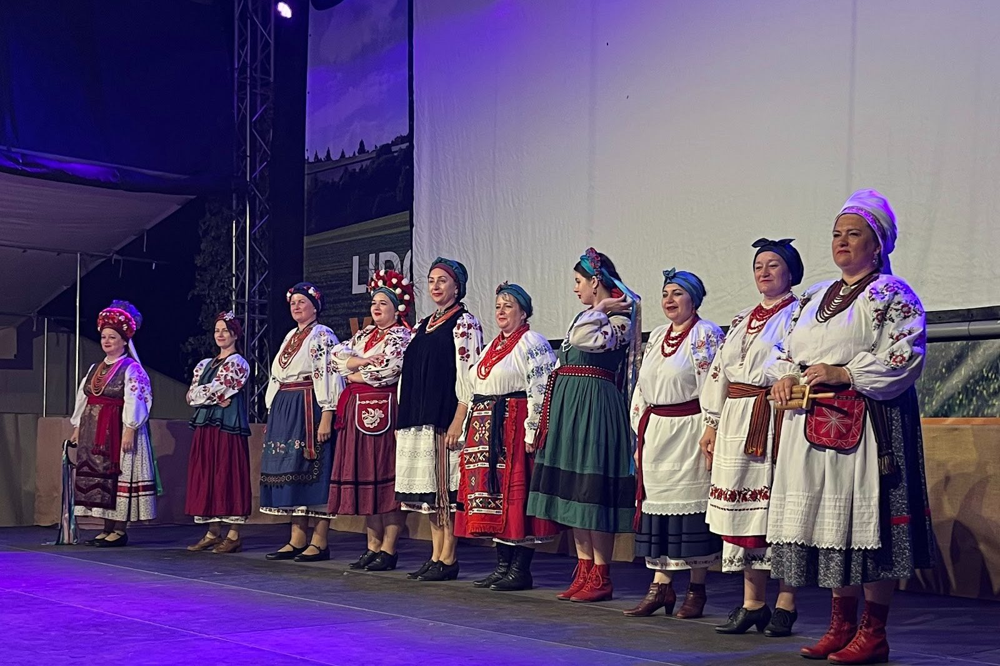

Новини ·
«Купава» на Міжнародному фольклорному фестивалі Lidový rok
5 вересня 2026 року «Купава» виступила на Міжнародному фольклорному фестивалі Lidový rok у Велькій Бистршиці.

Дякуємо за запрошення та можливість бути частиною Міжнародного фольклорного фестивалю Lidový rok у Велькій Бистршиці. Ми зустрілися з ансамблями з Чехії, Словаччини, Мексики та Португалії й привезли багато чудових спогадів.
Щира вдячність усій команді організаторів за турботу.
Контакти ← На головну сторінку